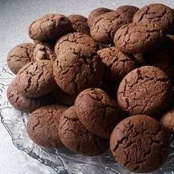

Peanut Butter Cookies

Description
Simple cookies made with cake mix.
Ingredients
- 1 cup crunchy peanut butter
- ⅓ cup water
- 2 eggs
- 1 (18.25 ounce) package yellow cake mix
Steps
- Preheat the oven to 375 degrees F (190 degrees C).
- In a large bowl, stir together the peanut butter,
water and eggs until smooth and well blended. Stir in the cake mix.
Use your hands if necessary to blend thoroughly.
Roll into walnut sized balls or drop by spoonfuls 3 inches apart onto
ungreased cookie sheets.
Press each cookie down using a floured fork.
- Bake for 8 to 20 minutes in the preheated oven, until golden brown.
Remove from baking sheets to cool on wire racks.
Previous recipe
Back to home